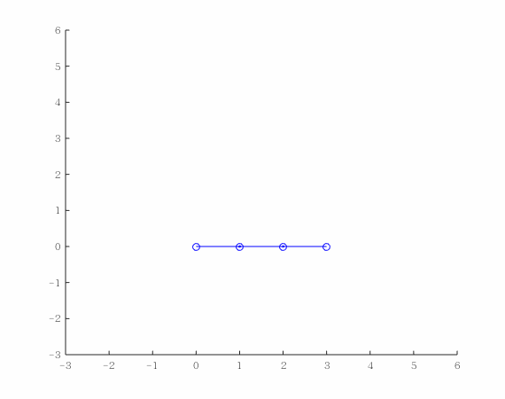

目的
- 精读论文并简单实现论文的例子
- 搭建一个基本的框架(包含正运动学,jacobian,正逆动力学部分),将其仿真实现,并可应用于n-dof的机械臂.
仿真如下:(t=0.01,红色圆表示安全距离,蓝色圆为障碍.*点为目标点)

解决规划问题的论文有不少,但最经典的应该还是khatib1986那篇文章:real time obstacle avoidance for manipulators and moile robots.总的说来就是在operation space计算控制律,并通过jacobian矩阵将其转化为力矩,求得joint space的控制力作为控制信号.有陷入局部极小点的问题(这一块我将放在mathematica中进行分析,这款软件可视化很给力,尽管我还是个初学者)
大体思路如下:
- 寻找each arm segment距离障碍最近点,如果满足一定条件,则施加斥力
- 将斥力转化为关节力矩
- 作为控制律
我们希望整个机械臂避免碰撞,但目前我们将问题减少至仅关心每段到障碍物最近的点.如果达到距离阀值则将施加斥力使其远离障碍.
为了找到手臂距离障碍物最近点$p_{psp}$,假设$x_c(:,i)$和$x_c(:,i+1)$为手臂(考虑直线)首尾端点.$ob_{orgin}$为障碍物中心.
1 | % 计算各杆距离障碍物最近点closest,dist到障碍物中心距离,drhodx最近点指向障碍物外点向量 |
利用夹角公式即可.
论文中
距离函数设计如下(arm closer,response stronger):
$$F_{psp}=\eta(\frac{1}{\rho}-\frac{1}{\rho_0})\frac{1}{\rho^2}\frac{\partial \rho}{\partial x}$$
其中$\rho$表示到障碍的距离,$\rho_0$为安全(threshold)距离.(这里有个问题:如何合适的确定距离阀值呢?-这需要从论文的证明角度进行考虑.)
关键在于第二部分,我采用的是机械臂的几何雅克比矩阵[1] (spatial velocity twist jacobian,为方便表述记为$J_s$),故与论文中的$^0J$相差一个变换.
几本教材的说法不太统一.
为了计算受势场力点的jacobian矩阵,有三种方法,以三连杆为例.
第一种见:常见
1 | %% 方法1 求得world frame EE velocity jacobian |
第二种为数值计算:
1 | %M为相对位姿{psp} in frame{0} |
第三种为[1] 书中所介绍的,利用伴随映射和Twist计算.不再赘述.
再利用$\tau = J^TM_{x}F_{psp}$计算关节空间的力矩,方便起见,仿真程序设$M_{x}$为单位矩阵.($M$ works to linearize the control)
特别注意的是,虚拟引力的设计,为了使得追踪过程end-effector走直线(不受虚拟斥力时),考虑速度限制,详细见论文.
1 | dx = js*dthetalist; |
关于动力学,采用递推公式(相比Lagrange方法,更适合多自由度情况).
[1]: A Mathematical Introduction to Robotic Manipulation